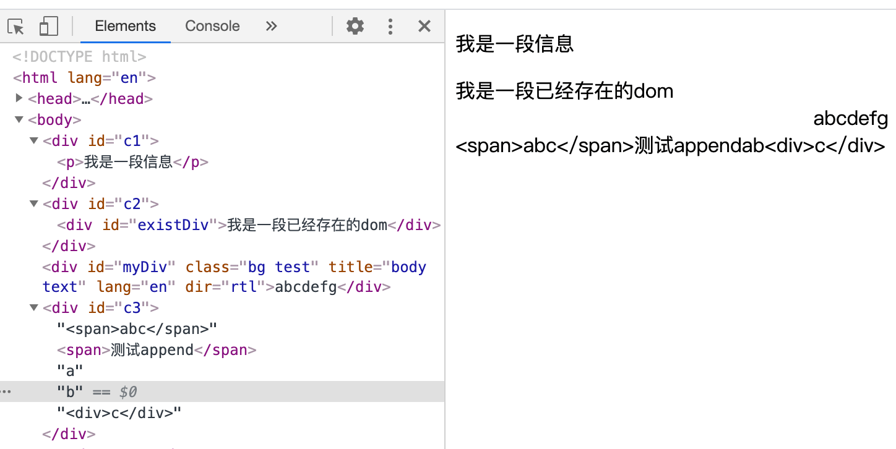

JS append 和 appendChild 的区别
这篇文章发布于 2020/11/16，归类于 JavaScript
标签：
append appendChild区别，append()和appendchild()，append和appendChild
在JS高程3中，并没有讲到 append()，基本都是用的 appendChild()，所以有知识盲点，这里对比下 append() 和 apendChiild() 的区别，如下表所示：append 用于在元素内容里追加一个 Node 节点，appendChiled() 用于在元素内容里追加一个或多个 Node 节点或 String 。
| 方法 | 所属对象 | 功能 | 返回值 | 兼容性 |
|---|---|---|---|---|
| appendChild | Node | 在元素内容里追加一个 Node 节点 | append的节点 | 基本都兼容 |
| append | ParentNode | 在元素内容里追加一个或多个 Node 节点或 String | undefined | 实验性功能 不支持 IE |
注意，如果 append 或 appendChild 的元素是已经存在的，会移动该元素，如果需要保持原来的不移动，需要先 cloneNode, 下面来看一个例子
<body>
<div id="c1"></div>
<div id="existDiv">我是一段已经存在的dom</div>
<div id="c2"></div>
<div id="c3"></div>
<script>
// 1.测试基本功能：创建节点，并 appendChild 到 c1元素
let p = document.createElement('p')
let text = document.createTextNode('我是一段信息')
p.appendChild(text)
console.log(p, p.__proto__) // HTMLParagraphElement
document.querySelector('#c1').appendChild(p)
// document.querySelector('#c1').appendChild('1212') // Error, Node
// 2.测试 appendChild 一个已存在的节点，移动节点，而不是copy
let existDiv = document.querySelector('#existDiv')
console.log(existDiv, existDiv.__proto__) // HTMLDivElement
console.log('测试appendChild 返回', document.querySelector('#c2').appendChild(existDiv))
// console.log('测试append 返回', document.querySelector('#c2').append(existDiv))
// 4.测试append
let span = document.createElement('span')
// 不要写成链式调用，它返回的是成功appendChild的节点
span.appendChild(document.createTextNode('测试append'))
document.querySelector('#c3').append('<span>abc</span>')
document.querySelector('#c3').append(span, 'a', 'b', '<div>c</div>')
</script>
</body>执行效果如下图

关于 Node 节点 Element 元素对象的一些值
<div id="myDiv" class="bg test" title="body text" lang="en" dir="rtl">abcdefg</div>
// 3.测试节点类型、对象信息 HTMLDivElement => HTMLElement => Element => Node
// 参考：DOM https://www.yuque.com/guoqzuo/js_es6/hoglme#6bbee863
var div = document.getElementById("myDiv"); // HTMLDivElement
console.log(div.nodeType) // 1 Node.ELEMENT_NODE
console.log(div.nodeName) // DIV
console.log(div.id); // myDiv
console.log(div.className); // bg test
console.log(div.title); // body text
console.log(div.lang); // en
console.log(div.dir); // rtl